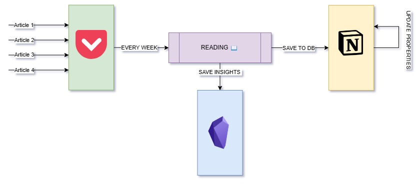

I use a combination of the following tools to achieve my goal:
- Browser,
- Pocket,
- Notion,
- Obsidian.
My main objective is to gather useful information that I can use for Individual Development Plans (IDPs) to teach others and blogs posts. However, in the past, I faced the challenge of having a cluttered Notion database with unread and outdated articles. I used the Notion web-clipper to save articles to my database. However, I still struggled to read all the articles, leading to a mess of information. And acutally this made it difficult for me to manage my information effectively.
This is how it looks:
Then I discovered Pocket, which proved to be a perfect tool for managing my unread articles. Here is the process I came up with:
- When I come across a good article worth reading, I add it to Pocket.
- During the week, I gather a bunch of articles to read.
- Once a week, I spend around an hour reading all the articles I saved, taking notes and highlighting important points using Obsidian.
- After reading, I decide if the article is worth keeping in my Notion database. If not, I move on to other articles.
- If yes, I add it to my Notion database and include all the necessary information, such as keys, url and so on.
As a result, my Notion database is now well-organized and contains only relevant and useful articles.
Actually, I no longer need to use a star rating system as in the previous version.
In conclusion, managing articles effectively requires a good system and the right tools. With the help of Pocket, Notion, and Obsidian, I am able to read articles and build my knowledge base efficiently. The image below illustrates my reading process.
